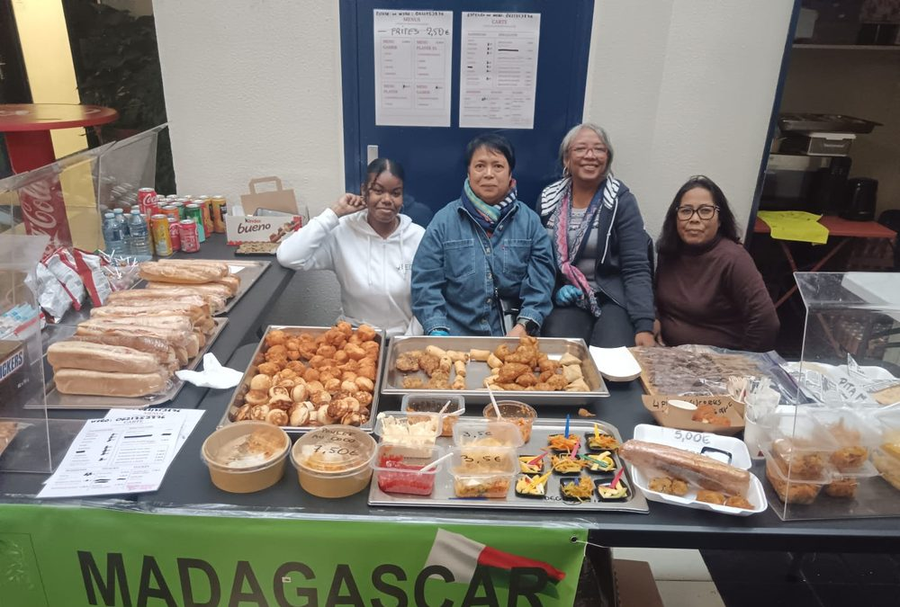
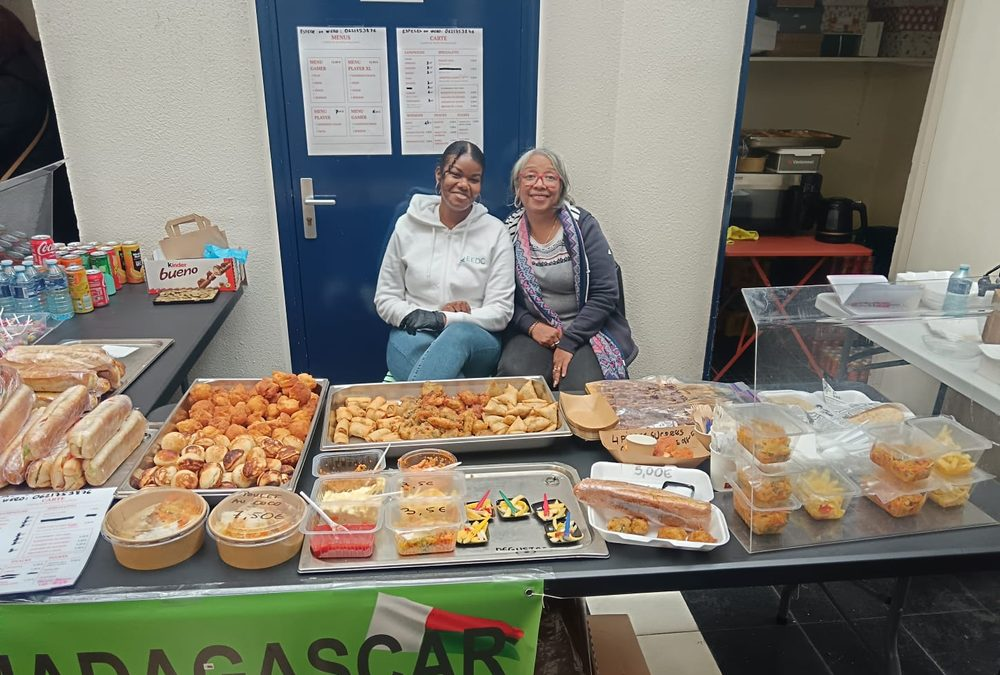

Actu
Notre buvette au Festival du jeu vidéo et du numérique de Clamart
Pendant tout un week-end, VVSD a tenu la buvette du Festival du jeu vidéo et du numérique organisé par la Ville de Clamart. Sandwichs, beignets, gâteaux et boissons chaudes : deux jours de cuisine, de rires et de belles rencontres avec les joueurs, les familles et les curieux venus faire une pause à notre stand.
C'était un super moment, dans une ambiance vraiment chaleureuse ! Merci à toutes celles et ceux qui sont passés nous voir, et à la Ville de Clamart pour son accueil. On a hâte de recommencer.

